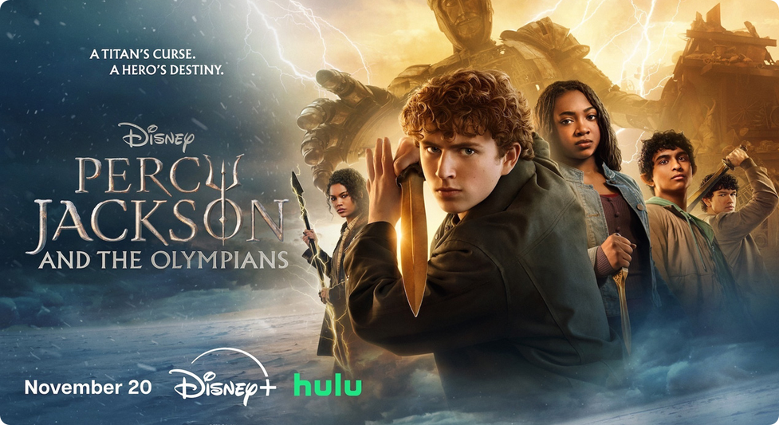
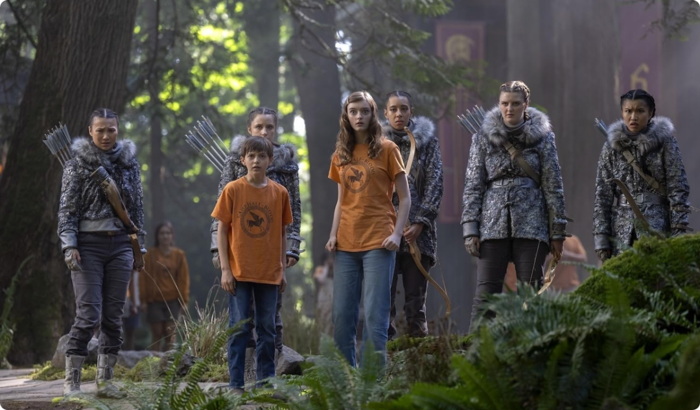
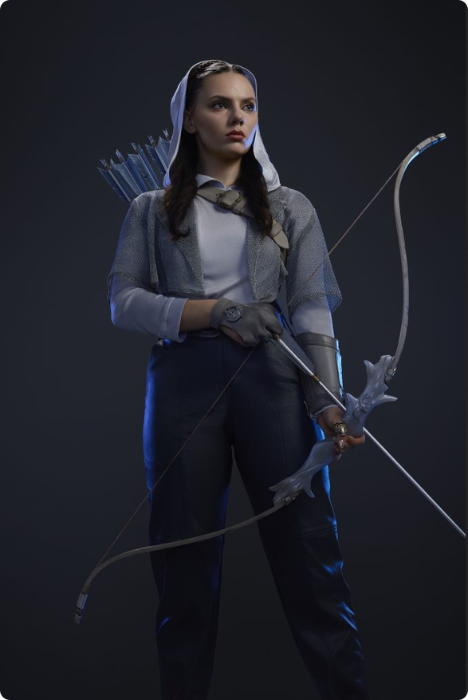

11月2日，第三季预告片放出。11月20日，正片正式上线。前后不到二十天，官方这次几乎没给观众喘息的余地。

按照目前公开的信息，剧情简介中已经透露出了玄机：“古老的诅咒被唤醒，半神人们将面临更加黑暗、沉重的危机。”，这是原著系列中公认最黑暗、最沉重，也是最扣人心弦的一部。
对比前两季的少年冒险气质，这次直接把诅咒摆到了台面上，众神也不再是背景板，而是重新被拉回到战场中央。月亮女神阿尔忒弥斯的狩猎者小队、神秘的巨神诅咒谜团，全部会在本季揭开面纱。半神们不再只是少年英雄，他们将直面牺牲、背叛和无法挽回的失去。这对于一路追随的粉丝来说，是一次巨大的情感考验，也是角色真正成长的开始。

这一季的导演换成了詹姆斯·博宾。这个名字对奇幻喜剧观众来说不算陌生，他此前的作品风格偏向节奏明快、想象外放，如今接手一个正在转向"更黑暗、更沉重"的系列，会碰撞出什么样的质感，本身就是一大看点。
主演依然是观众熟悉的铁三角：沃克·斯科贝尔、莎拉·乔德利、利亚·杰弗里斯、阿里安·西姆哈德里。
最令人惊喜的莫过于达芙妮·基恩（Dafne Keen） 的加盟！这位在《金刚狼3》中饰演“X-23”而惊艳全球的年轻演员，将出演月亮与狩猎女神阿尔忒弥斯。她自带的那种冷峻、野性又倔强的气质，与阿尔忒弥斯几乎完美契合。想象一下她身披银弓、穿梭于林间的样子，期待值直接拉满！

此外，还有多位实力派演员助阵：《周六夜现场》的喜剧女王凯特·麦克金农将出演爱与美之神阿佛洛狄忒，《神盾局特工》的温明娜和《闪舞》的詹妮弗·比尔斯也将饰演重要角色。老戏骨加上新生代，这阵容的化学反应绝对值得期待。
把这些人凑在一部奇幻剧里，本身就说明制作方对这一季的定位：不是过渡季，而是要往前推一大步。尤其多位演员都有大银幕和喜剧、正剧的功底，放到"众神与半神"的框架下，角色之间的张力值得期待。
从目前的阵容和剧情走向来看，《波西·杰克逊》第三季野心勃勃。它不仅要讲好一个少年英雄的冒险故事，更要讲好一个关于责任、牺牲与成长的神话史诗。
2026年11月20日，记得回混血营报到。这一次，我们要和波西一起，直面巨神的诅咒。